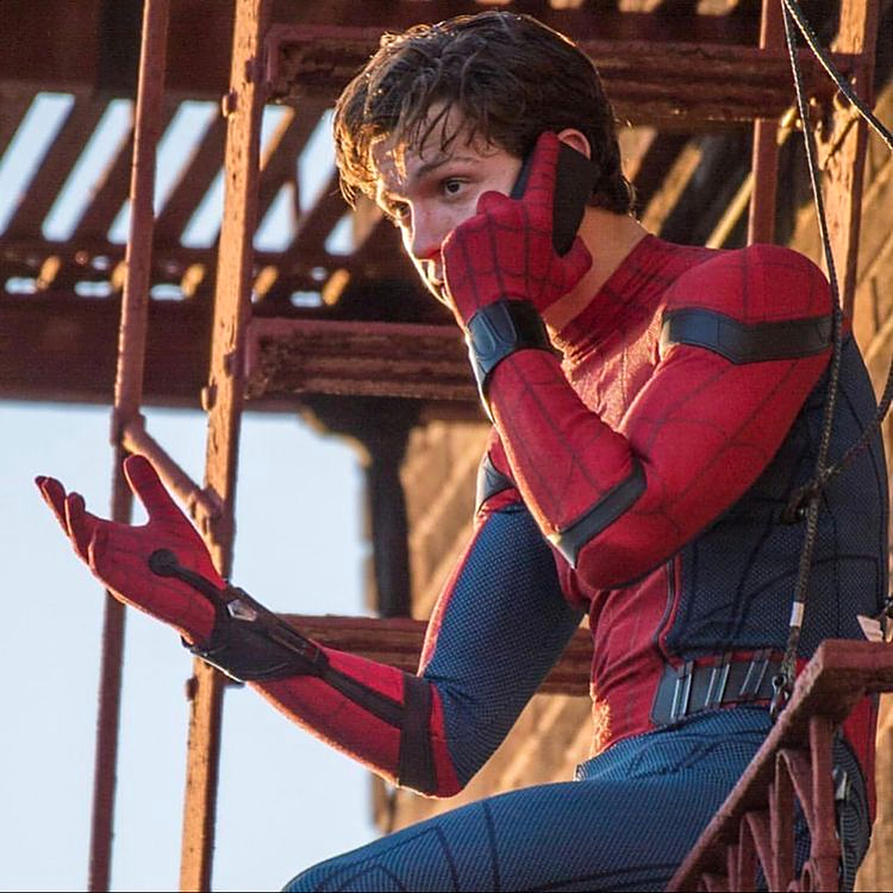
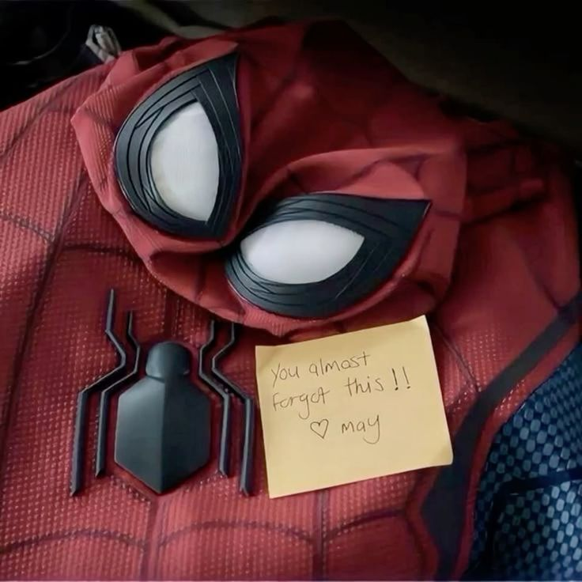
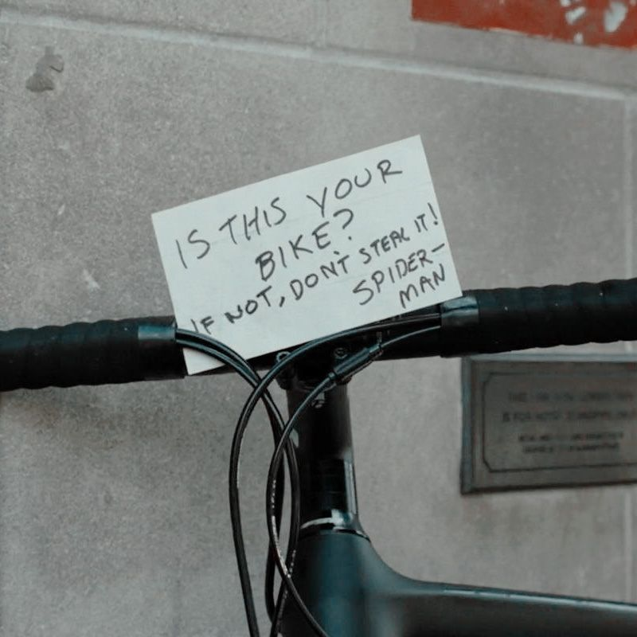
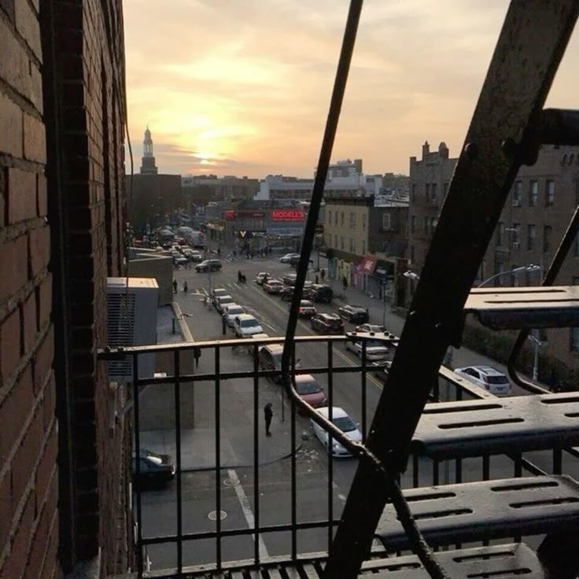
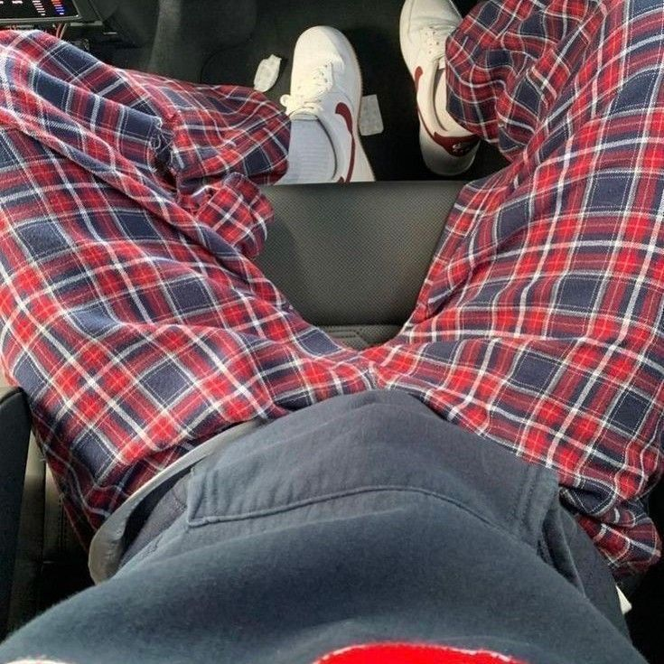
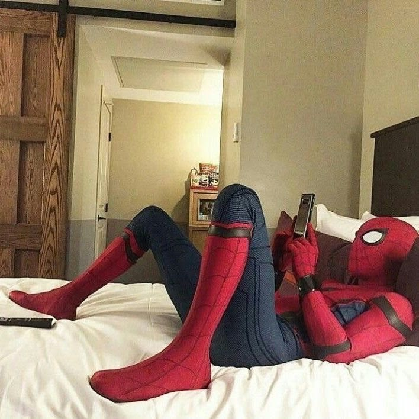

@hollandfiles ★ ☆ ★ ★ ☆ ☆всё отоме холланде
твой дружелюбный соседский фан-сайт ★
биография, роли, факты и фото — в одном месте
edit by @hollandfiles
биография★
из лондонского пригорода — в костюм человека-паука.


Томас Стэнли Холланд родился 1 июня 1996 года в Кингстоне-на-Темзе, пригороде Лондона. Его мама — фотограф Никола Фрост, папа — комик и писатель Доминик Холланд. У Тома три младших брата: Сэм, Гарри и Пэдди.
В детстве Том занимался хип-хоп-танцами и гимнастикой. Именно танцы привели его в театр, а в 2016 году он впервые сыграл Питера Паркера и в 19 лет стал самым молодым актёром, сыгравшим Человека-паука в большом кино.
- 1996 — рождение в Кингстоне-на-Темзе
- 2008 — мюзикл «Билли Эллиот» в Вест-Энде
- 2012 — дебют в кино, «Невозможное»
- 2016 — первый раз в роли Человека-паука
- 2017 — премия BAFTA «Восходящая звезда»
- 2021 — «Человек-паук: Нет пути домой»
- 2024 — Ромео в «Ромео и Джульетте» в Лондоне
- 2026 — «Одиссея» Нолана и «Человек-паук: Новый день»
edit by @hollandfiles
фильмография★
каждая роль — новый уровень.
★ — фильмы киновселенной Marvel
edit by @hollandfiles
факты★
то, что знают не все.

- все сальто в фильмах делал сам — спасибо гимнастике
- в детстве Тому поставили дислексию
- главный «спойлерщик» Marvel: ему выдавали только свои сцены
- на промотуре «Войны бесконечности» к нему «приставили» Камбербэтча
- вместе с семьёй основал фонд The Brothers Trust
- в 2024 году запустил безалкогольное пиво Bero
- озвучил эльфа Иэна в мультфильме «Вперёд»
- сыграл Нейтана Дрейка в экранизации игры Uncharted
edit by @hollandfiles
галерея★
нажми на фото, чтобы увеличить.